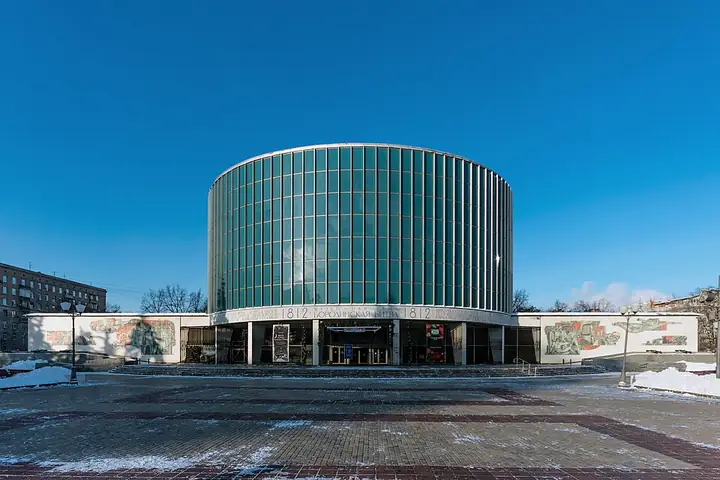

Фото: Alex 'Florstein' Fedorov, CC BY-SA 4.0 · Wikimedia Commons
Музей · ЗАО
Бородинская панорама
Круговое полотно Рубо о Бородинском сражении на Кутузовском. Пятница — выходной.
- ₽₽ · 1 500–3 000 ₽ на человека
- в 1 плане
Позвать сюда: Бородинская панорамаОткрыть в каталоге: Бородинская панорамаМаршрут до места: Бородинская панорама
Адрес и детали
- Адрес
- Кутузовский просп., 38, стр. 1
Открыть на Яндекс Картах (в новой вкладке) - Метро
- м. Парк Победы
- Округ
- Запад (ЗАО)
- Цена
- 1 500–3 000 ₽ на человека
- Часы работы
- пн–ср 10:00–17:15; чт 10:00–20:15; сб, вс 10:00–17:15 · проверили в октябре 2026
- Телефон
- +7 (499) 148-19-67
- Проверено
- работает — проверили в октябре 2026
Планы с этим местом 1
- Бородинская панорама · Музей · м. Парк Победы
- 2 минуты пешкомAtlantica Seafood · Рыбный ресторан
Сначала круговое полотно Рубо о Бородинском сражении, а потом устрицы и рыба в Atlantica в двух минутах пешком. Учтите: по пятницам панорама закрыта.
Открыть план: Бородино и морепродуктыПозвать сюда: Бородино и морепродукты
Фото: Alex 'Florstein' Fedorov, CC BY-SA 4.0 · Wikimedia Commons

Похожие рядом


Что ещё рядом
Как позвать
- Выбери план, место или событие — в карточке адрес, цены и маршрут в Яндекс Картах.
- Нажми «Позвать сюда» — соберётся приглашение-игра для свидания или голосование для компании.
- Отправь ссылку в любой мессенджер: тебе ответят, а компания отметит, куда и когда может. Бесплатно и без регистрации.